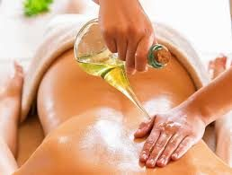

Abhyanga Explained: Ancient Ayurvedic Massage for Modern Wellness

In today’s hectic world, where stress, pollution, and fatigue have become daily companions, finding ways to rejuvenate and restore balance is essential. One powerful method that has stood the test of time is Abhyanga, an ancient Ayurvedic oil massage that provides both physical and mental healing. This therapeutic practice, dating back over 5,000 years, continues to be a cornerstone of Ayurvedic wellness for promoting vitality, reducing stress, and detoxifying the body.
What is Abhyanga?
Abhyanga is a warm oil massage rooted in the principles of Ayurveda, the ancient Indian system of holistic health. The name comes from the Sanskrit words “Abhi” (movement) and “Anga” (limb), signifying the movement of oil across the body’s limbs and tissues. This massage involves generously applying warm, herb-infused oils to the body and using rhythmic, gentle strokes to stimulate circulation, nourish the skin, and balance the body’s three doshas—Vata, Pitta, and Kapha.
The Purpose of Abhyanga in Ayurveda
In Ayurveda, good health is seen as a balance between the body’s doshas—Vata, Pitta, and Kapha—each representing different elemental energies. Imbalance in these doshas can lead to disease, stress, and discomfort. Abhyanga helps maintain the equilibrium of the doshas by removing accumulated toxins, boosting circulation, and calming the mind.
Key Benefits of Abhyanga Massage
- Balances the Doshas and Calms the Nervous System
Whether you’re feeling stressed, anxious, or overwhelmed, Abhyanga helps calm the mind by balancing the doshas, especially Vata, which tends to get aggravated in stressful times. The warm oil, coupled with gentle strokes, soothes the nervous system and reduces stress hormones, leaving you in a state of relaxation and mental clarity. - Nourishes and Hydrates the Skin
One of the most immediate effects of Abhyanga is how it revitalizes the skin. Ayurvedic oils, often infused with healing herbs, deeply hydrate and nourish the skin. These oils help improve skin texture, increase elasticity, and protect against environmental toxins. It’s a natural way to maintain glowing, supple skin. - Detoxifies the Body
Abhyanga supports the body’s natural detoxification process by stimulating the lymphatic system, which is responsible for removing toxins and waste products from the body. By enhancing lymphatic drainage, Abhyanga promotes better circulation and helps flush out toxins, resulting in improved energy levels and overall health. - Improves Circulation and Joint Flexibility
The massage strokes in Abhyanga enhance blood flow, which helps deliver oxygen and essential nutrients to tissues. This not only improves circulation but also helps relieve muscle tension and promotes flexibility in the joints. It’s particularly beneficial for people dealing with stiffness or joint pain. - Enhances Sleep Quality
Insomnia and poor sleep are often the results of a stressed and imbalanced nervous system. Abhyanga’s soothing effect helps calm the mind and body, making it an excellent remedy for better sleep. A regular Abhyanga routine before bed can lead to deeper, more restful sleep, helping you wake up refreshed. - Boosts Immunity
By nourishing the body’s tissues and promoting healthy circulation, Abhyanga enhances the immune system’s ability to ward off illnesses. The detoxification and anti-inflammatory benefits also contribute to stronger immunity, making it an ideal therapy for maintaining health throughout the year. - Supports Emotional Well-being
Abhyanga is not just about physical healing; it’s deeply tied to emotional and spiritual wellness. The mindful act of massaging the body with warm oils creates a feeling of self-love and grounding, helping you connect with your inner self. Many people experience emotional release and a heightened sense of balance after Abhyanga.
The Process of Abhyanga
While receiving Abhyanga from a professional Ayurvedic therapist is a luxurious experience, you can also perform it at home as part of your self-care routine. Here’s how:
- Select the Right Oil
Choosing the right oil for your dosha type is essential. Oils used in Abhyanga are typically infused with herbs that enhance their therapeutic effects. Here’s a quick guide to selecting the right oil:
- Vata (Dry, Cold, Rough): Sesame oil or almond oil, which are warming and grounding.
- Pitta (Hot, Oily, Sensitive): Cooling oils like coconut or sunflower oil.
- Kapha (Heavy, Oily, Slow): Lighter oils such as mustard or safflower oil.
- Warm the Oil
Slightly heat the oil to a comfortable, warm temperature. Warm oil is more effective in penetrating the tissues and provides a soothing sensation.
- Apply the Oil with Intention
In a calm, quiet space, begin by massaging your scalp, working the oil into your hair roots. Gradually apply the oil to the rest of your body, using long strokes on the limbs and circular motions on the joints. Pay extra attention to your feet and hands, which have important energy points.
- Massage for 15–20 Minutes
Spend about 15 to 20 minutes massaging the oil into your skin. Focus on areas that feel tense or stiff, and allow the oil to be absorbed by the body.
- Rest and Rinse
After the massage, let the oil sit for about 10 minutes to allow the herbs to penetrate the skin. Then, take a warm shower or bath to rinse off the excess oil. It’s recommended to avoid using harsh soaps, as they can strip the skin of its natural oils.
When to Perform Abhyanga
For maximum benefit, practice Abhyanga in the morning before showering, as part of your daily self-care ritual. However, it’s also an excellent way to wind down in the evening if you’re looking for relaxation and better sleep. Whether you practice it daily or a few times a week, consistency is key to reaping the full benefits of this ancient therapy.
Modern Wellness and Abhyanga
As more people seek holistic ways to manage stress and improve their health, Abhyanga is finding a place in modern wellness routines. Its ability to restore balance, nourish the body, and calm the mind makes it an ideal practice for today’s fast-paced, stressful lifestyles.
Conclusion
Ayurvedic Abhyanga is more than just an ancient practice—it’s a gateway to modern wellness. By balancing the doshas, detoxifying the body, nourishing the skin, and calming the mind, Abhyanga offers holistic healing that enhances both physical and emotional well-being.